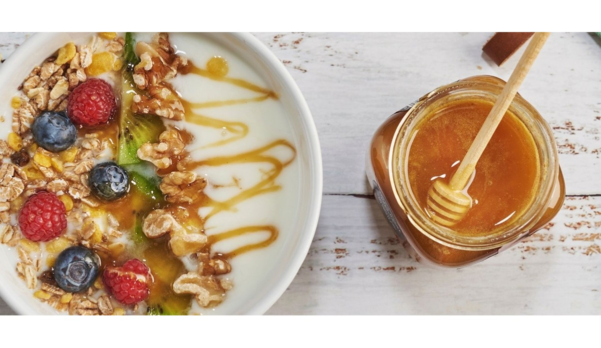

Ensalada de Frutas Frescas
Ingredientes:
- Manzana
- Plátano
- Fresas
- Uvas
- Yogur natural
Preparación: Corta todas las frutas en trozos pequeños, mézclalas en un tazón grande y añade yogur natural al gusto. ¡Disfruta de una merienda saludable y deliciosa!

Bienvenido a nuestra página sobre conciencia ecológica y alimentación saludable. Aprende cómo puedes reducir la generación de basura en nuestra escuela y adoptar hábitos alimenticios más saludables.
Conoce la cantidad de basura generada en nuestra escuela y el impacto que tiene en el medio ambiente. Incluir información investigada
En base a los resultados de nuestra ncuesta realizada a 100 estudiantes se obtuvieron las siguientes cifras con respuestas cerradas como "1 vez a la semana" hasta "4 veces a la semana"de las siguientes preguntas.
1.-¿Con qué frecuencia consumes comida rápida durante la semana?
2.- ¿Cuámtas porciones de fruta y/o verdura consumes a la semana en la escuela?
3.- ¿Con qué frecuencia consumes bebidas azucaradas como refrescos o jugos procesados?
4.- ¿Cuántas comidas al día sueles hacer?

Descubre los beneficios de una alimentación saludable y cómo puede mejorar tu vida y el medio ambiente. Mientras te diviertes con juegos interactivos.
Food Hero| 1. Reducción del Consumo | 2. Reutilización y Reciclaje | 3. Compostaje de Residuos Orgánicos | 4. Uso de Productos Reutilizable | 5. Educación y Concienciación |
|---|---|---|---|---|
| Comprar productos a granel o en envases reutilizables para reducir el embalaje | Reutilizar bolsas de compras, botellas de agua y otros envases en lugar de desecharlos después de un solo uso. | Compostar restos de alimentos y otros residuos orgánicos para reducir la cantidad de desechos enviados a los vertederos. | Utilizar servilletas de tela en lugar de servilletas de papel desechables. | Informarse sobre prácticas de reducción de residuos y compartir esta información con amigos y familiares. |
| Optar por productos duraderos y de alta calidad en lugar de artículos desechables. | Reciclar papel, cartón, plástico y vidrio de acuerdo con las regulaciones locales. | Utilizar el compost como fertilizante natural para plantas y jardines. | Llevar contenedores reutilizables para transportar alimentos y bebidas en lugar de envases desechables. | Participar en programas comunitarios de limpieza y reciclaje para promover la conciencia ambiental. |
Ingredientes:
Preparación: Corta todas las frutas en trozos pequeños, mézclalas en un tazón grande y añade yogur natural al gusto. ¡Disfruta de una merienda saludable y deliciosa!
Ingredientes:
Preparación: Lava bien las espinacas y colócalas en la licuadora.Agrega la piña, el mango y la banana en trozos a la licuadora. Vierte la leche de almendras y el yogur griego sobre las frutas y verduras. Opcionalmente, agrega las semillas de chía y los cubitos de hielo. Licua todos los ingredientes hasta obtener una mezcla suave y homogénea. Si es necesario, ajusta la consistencia agregando más leche de almendras o agua. Sirve el batido en un vaso grande y disfrútalo de inmediato.

Ingredientes:
Preparación: 1.-Coloca el yogur griego en un tazón o en vasos individuales para servir. 2.-Agrega las frutas frescas cortadas encima del yogur. Puedes usar una combinación de tus frutas favoritas para obtener más variedad de sabores y nutrientes. 3.- Rocía un poco de miel o jarabe de agave sobre las frutas y el yogur. La cantidad dependerá de tu gusto personal y de lo dulce que quieras que sea el postre. 4.-Si lo deseas, puedes espolvorear almendras o nueces picadas por encima para darle un toque crujiente y un extra de sabor. 5.-¡Sirve y disfruta de este delicioso y saludable postre!
Ponte en contacto con nosotras al siguiente correo
Contáctanos